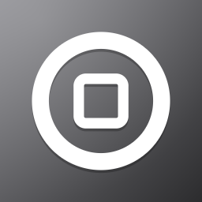
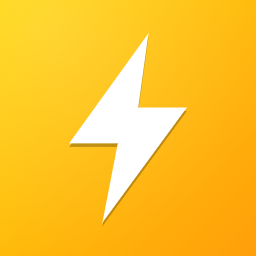
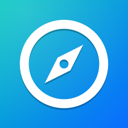
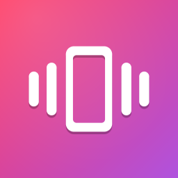

sblow
@
repo
:
~
$ sileo --add-source
SBlow Repo
tweaks rootless pour Dopamine · iOS 16 – 18
[ Ajouter à Sileo ]
[ Ajouter à Zebra ]
source =
"https://rootatsblowfr.github.io/sileo/"
tweaks (10)
1
StatusInfo
[Interface]
Réseau, RAM, température et batterie sous l'heure.
2
ClipStack
[Productivité]
Tout ton presse-papier, à un bouton du clavier.
3
AppVolume
[Audio]
Chaque app retrouve son propre volume.
4

HomeKey
[Système]
Double, triple et appui long sur le bouton Home, à ta façon.
5

Lite
[Système]
Un iPhone 3 Go plus fluide : RAM, animations, batterie.
6
DevKit
[Développeur]
Overlay FPS / RAM / vue sous le doigt et dump d'entitlements.
7
Cloak
[Confidentialité]
Faux identifiants, fausse position par app, journal des accès.
8
Shield
[Confidentialité]
Bloque pubs, pisteurs et bannières cookies. Pare-feu par app.
9

SafariPlus
[Navigation]
Userscripts et user-agent par site dans Safari.
10

Haptix
[Interface]
Retour haptique sur les icônes et les boutons.
NORMAL
sileo
10 tweaks · gruvbox